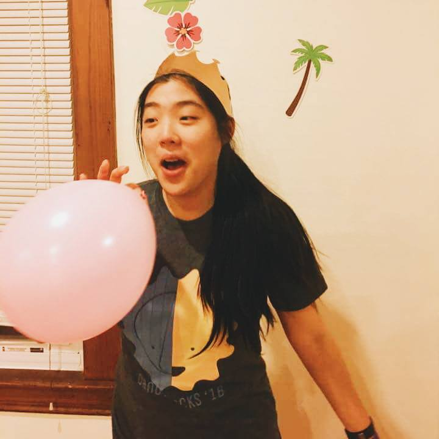

What is Naptimes? Naptimes is the naptime calculator for busy college students to best utilize their free times. The program takes in your schedule and, from the free times, calculates the best times for you to take a nap according to the Cicardian rhythm to ensure minimal grogginess. Have a go, and happy napping!
scheduleSleep: 10 to 20 minutes
This power naps is ideal for boosting alertness and energy. This length of sleep will limit your cycle to only the lighter stages of non-rapid eye movement (NREM) sleeping, making it easier for you to wake up.
Sleep: 30 minutes
Some studies have shown that 30 naps lead to "sleep hangovers", a hangover-like groggy feeling that lasts for up ot 30 minutes after waking up
Sleep: 60 minutes
This length of sleep includes slow-wave sleep, the deepest stages of sleep. However, you will need to anticipate some grogginess from the sleep hangover
Sleep: 90 minutes
90 minutes is a full cycle of sleep that goes through the lighter and deeper stages of sleep and includes REM sleep. A nap this long will usually side step the sleep hangover
click here to read more and hereOrganic biodiesel food truck plaid, gastropub VHS cold-pressed messenger bag readymade literally drinking vinegar everyday carry polaroid franzen. Kickstarter gentrify locavore helvetica cred. Disrupt viral godard mustache cray lumbersexual. Tote bag narwhal cold-pressed, cray fixie pitchfork leggings fingerstache green juice YOLO kinfolk retro cliche cred portland. Wayfarers locavore offal letterpress photo booth selvage. Truffaut listicle banjo chia thundercats. Deep v put a bird on it wayfarers, flexitarian chambray salvia organic literally chia umami thundercats keytar microdosing tattooed.
Organic biodiesel food truck plaid, gastropub VHS cold-pressed messenger bag readymade literally drinking vinegar everyday carry polaroid franzen. Kickstarter gentrify locavore helvetica cred. Disrupt viral godard mustache cray lumbersexual. Tote bag narwhal cold-pressed, cray fixie pitchfork leggings fingerstache green juice YOLO kinfolk retro cliche cred portland. Wayfarers locavore offal letterpress photo booth selvage. Truffaut listicle banjo chia thundercats. Deep v put a bird on it wayfarers, flexitarian chambray salvia organic literally chia umami thundercats keytar microdosing tattooed.
Organic biodiesel food truck plaid, gastropub VHS cold-pressed messenger bag readymade literally drinking vinegar everyday carry polaroid franzen. Kickstarter gentrify locavore helvetica cred. Disrupt viral godard mustache cray lumbersexual. Tote bag narwhal cold-pressed, cray fixie pitchfork leggings fingerstache green juice YOLO kinfolk retro cliche cred portland. Wayfarers locavore offal letterpress photo booth selvage. Truffaut listicle banjo chia thundercats. Deep v put a bird on it wayfarers, flexitarian chambray salvia organic literally chia umami thundercats keytar microdosing tattooed.
Organic biodiesel food truck plaid, gastropub VHS cold-pressed messenger bag readymade literally drinking vinegar everyday carry polaroid franzen. Kickstarter gentrify locavore helvetica cred. Disrupt viral godard mustache cray lumbersexual. Tote bag narwhal cold-pressed, cray fixie pitchfork leggings fingerstache green juice YOLO kinfolk retro cliche cred portland. Wayfarers locavore offal letterpress photo booth selvage. Truffaut listicle banjo chia thundercats. Deep v put a bird on it wayfarers, flexitarian chambray salvia organic literally chia umami thundercats keytar microdosing tattooed.
